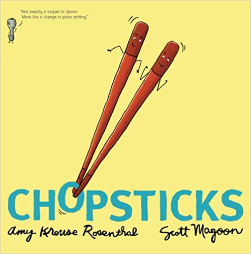
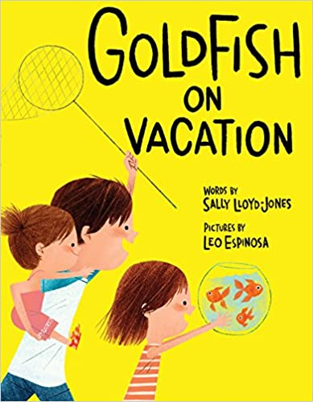

We teach toddlers to identify colors, numbers, shapes, and letters—but what about their feelings? By illustrating such common emotions as happiness, sadness, anger, fear, and calm, this sensitive book gently encourages young children to open up with parents, teachers, and daycare providers. And kids will LOVE the bright illustrations and amazing 3-D pop-ups on every page!
 Every Sunday after church, CJ and his grandma ride the bus across town. But today, CJ wonders why they don’t own a car like his friend Colby. Why doesn’t he have an iPod like the boys on the bus? How come they always have to get off in the dirty part of town? Each question is met with an encouraging answer from grandma, who helps him see the beauty—and fun—in their routine and the world around them.
Every Sunday after church, CJ and his grandma ride the bus across town. But today, CJ wonders why they don’t own a car like his friend Colby. Why doesn’t he have an iPod like the boys on the bus? How come they always have to get off in the dirty part of town? Each question is met with an encouraging answer from grandma, who helps him see the beauty—and fun—in their routine and the world around them.
TouchThinkLearn: Featuring spreads each with raised shaped letters and objects that fit into scooped cutouts on their opposite page. Seeing the image, tracing its shape, saying its name: these modes of perception combine in a dynamic way to stimulate understanding of essential concepts. In a format unlike any other, these groundbreaking books translate abstract thought into tangible knowledge.
The determined story of an Ojibwe grandmother (nokomis), Josephine Mandamin, and her great love for nibi (water). Nokomis along with other women, men and youth, walk around all the Great Lakes, to raise awareness of our need to protect nibi: for future generations and for all life on the planet. By her example, she challenges us all to take up our responsibility to protect our water, the giver of life, and to protect our planet for all generations.
Rock is the invincible champion of the Kingdom of Backyard, but winning comes too easily. Meanwhile, two other hardcore competitors are having similar crises: Paper has vanquished all comers in the Empire of Mom’s Home Office while Scissors is the undisputed victor of the Kitchen Realm. Their yearning for worthy opponents is finally answered by a meet-up in the garage. From acclaimed, bestselling creators Drew Daywalt and Adam Rex, comes a laugh-out-loud hilarious picture book about the epic tale of the classic game Rock, Paper, Scissors.
When Lola's teacher asks the students to draw a picture of where their families immigrated from, all the kids are excited. Except Lola. She can't remember The Island—she left when she was just a baby. But with the help of her family and friends, and their memories, Lola's imagination takes her on an extraordinary journey back to The Island. As she draws closer to the heart of her family's story, Lola comes to understand the truth of her abuela's words: “Just because you don't remember a place doesn't mean it's not in you.”.
When the Authorities lock the sad little fact away, along with other facts, the world goes dark. But facts are stubborn things. With the help of a few skillful fact finders, they make a daring escape and bring truth back to brighten the world. Because after all, "a fact is a fact" and that's that!
Boys will love seeing strong, happy reflections of themselves in this vibrant, rhythmic picture book celebrating a diversity of hip black hairstyles. From a 'fro-hawk to mini-twists and crisp cornrows, adorable illustrations of boys with cool curls, waves, and afros grace each page, accompanied by a positive message that will make kids cheer.
 Happy Hair is a call and response picture book that promotes positive self-esteem and hair love to girls of all ages! Happy Hair covers different shades and hair types all while being fun and fashionable! This book is the foundation to building Happy Hair.
Happy Hair is a call and response picture book that promotes positive self-esteem and hair love to girls of all ages! Happy Hair covers different shades and hair types all while being fun and fashionable! This book is the foundation to building Happy Hair.
 From boogie-woogie Bubble Bugs to upside-down Umbrella Bugs, this fun-filled pop, pull, and peek book makes learning the alphabet exactly eight Egg Bugs excellent.
From boogie-woogie Bubble Bugs to upside-down Umbrella Bugs, this fun-filled pop, pull, and peek book makes learning the alphabet exactly eight Egg Bugs excellent.
All summer, Pearl has been trying to build the perfect sandcastle, but out-of-control Frisbees and mischievous puppies keep getting in the way! Pearl and her robot friend Pascal have one last chance, and this time, they’re going to use code to get the job done. Using fundamental computer coding concepts like sequences and loops, Pearl and Pascal are able to break down their sandcastle problem into small, manageable steps. If they can create working code, this could turn out to be the best beach day ever!
When Carmela wakes up on her birthday, her wish has already come true–she’s finally old enough to join her big brother as he does the family errands. Together, they travel through their neighborhood, until they arrive at the Laundromat, where Carmela finds a lone dandelion growing in the pavement. But before she can blow its white fluff away, her brother tells her she has to make a wish. If only she can think of just the right wish to make . . . The story is a moving ode to family, to dreamers, and to finding hope in the most unexpected places.

Meet Chopsticks! They've been best friends forever. But one day, this inseparable pair comes to a fork in the road. And for the very first time, they have to figure out how to function apart. From New York Times best-selling author Amy Krouse Rosenthal and rising artistic talent Scott Magoon, this witty and inventive tale celebrates both independence and the unbreakable bonds of friendship.
The bear, the moose and the beaver are the best of friends, even though they often disagree. On a canoe trip, the trio’s squabbling leads them into rough waters. Can they agree on a plan before it’s too late?
There's a wall in the middle of the book, and our hero--a young knight--is sure that the wall protects his side of the book from the dangers of the other side--like an angry tiger and giant rhino, and worst of all, an ogre who would gobble him up in a second! But our knight doesn't seem to notice the crocodile and growing sea of water that are emerging on his side. Who will come to his rescue? An individual who isn't as dangerous as the knight thought--from a side of the book that might just have some positive things to offer after all!
By John Oliver from HBO's Emmy winning Last Week Tonight John Oliver presents a children's picture book about a Very Special boy bunny who falls in love with another boy bunny. Meet Marlon Bundo, a lonely bunny who lives with his Grampa, Mike Pence the Vice President of the United States. But on this Very Special Day, Marlon's life is about to change forever... With its message of tolerance and advocacy, this charming bunny book for kids explores issues of same sex marriage and democracy…this better Bundo book is dedicated to every bunny who has ever felt different.
Ruben feels like he is the only kid without a bike. His friend Sergio reminds him that his birthday is coming, but Ruben knows that the kinds of birthday gifts he and Sergio receive are not the same. After all, when Ruben’s mom sends him to Sonny’s corner store for groceries, sometimes she doesn’t have enough money for everything on the list. So when Ruben sees a dollar bill fall out of someone’s purse, he picks it up and puts it in his pocket. But when he gets home, he discovers it’s not one dollar or even five or ten—it’s a hundred-dollar bill, more than enough for a new bike just like Sergio’s! But what about the crossed-off groceries? And what about the woman who lost her money?
Eugenie Clark fell in love with sharks from the first moment she saw them at the aquarium. But Eugenie quickly discovered that many people believed sharks to be ugly and scary―and they didn't think women should be scientists. Determined to prove them wrong, Eugenie devoted her life to learning about sharks. Through her accomplishments, she taught the world that sharks were to be admired rather than feared and that women can do anything they set their minds to.
Nine-year-old Ron loves going to the Lake City Public Library to look through all the books on airplanes and flight. Today, Ron is ready to take out books by himself. But in the segregated world of South Carolina in the 1950s, Ron's obtaining his own library card is not just a small rite of passage—it is a young man's first courageous mission. Here is an inspiring story, based on Ron McNair's life, of how a little boy, future scientist, and Challenger astronaut desegregated his library through peaceful resistance.
 When their class tadpoles are big enough, Mr. Stricter tells his students they can keep just one. The class chooses Bruno, the smallest of the bunch. But Bruno doesn't stay that way for long. Soon, he's grown into a giant, classroom-wrecking creature: he eats desks, he farts for show-and-tell, and he sneezes slime all over everything! With Mr. Stricter blinded by love for the pet, the students must step up and take matters into their own heroic hands.
When their class tadpoles are big enough, Mr. Stricter tells his students they can keep just one. The class chooses Bruno, the smallest of the bunch. But Bruno doesn't stay that way for long. Soon, he's grown into a giant, classroom-wrecking creature: he eats desks, he farts for show-and-tell, and he sneezes slime all over everything! With Mr. Stricter blinded by love for the pet, the students must step up and take matters into their own heroic hands.
Owen McPhee doesn't just like to talk, he LOVES to talk. He spends every waking minute chattering away at his teachers, his classmates, his parents, his dog, and even himself. But all that talking can get in the way of listening. And when Owen wakes up with a bad case of laryngitis, it gives him a much-needed opportunity to hear what others have to say.
When Floyd's kite gets stuck in a tree, he's determined to get it out. But how? Well, by knocking it down with his shoe, of course. But strangely enough, it too gets stuck. And the only logical course of action . . . is to throw his other shoe. Only now it's stuck! Surely there must be something he can use to get his kite unstuck. An orangutan? A boat? His front door? Yes, yes, and yes. And that's only the beginning.
We meet Leonard, a lion, and his best friend Marianne, a . . . duck. Leonard and Marianne have a happy life together—talking, playing, writing poems, and making wishes—until one day a pack of bullies questions whether it's right for a lion and a duck to be pals. Leonard soon learns there are many ways to be a lion, and many ways to be a friend, and that sometimes finding just the right words can change the world.
Jabari is definitely ready to jump off the diving board. He’s finished his swimming lessons and passed his swim test, and he’s a great jumper, so he’s not scared at all. “Looks easy,” says Jabari, watching the other kids take their turns. But when his dad squeezes his hand, Jabari squeezes back. He needs to figure out what kind of special jump to do anyway, and he should probably do some stretches before climbing up onto the diving board. In a sweetly appealing tale of overcoming your fears, newcomer Gaia Cornwall captures a moment between a patient and encouraging father and a determined little boy you can’t help but root for.
Mean Jean was Recess Queen and nobody said any different. Until a new kid came to school! With her irrepressible spirit, the new girl dethrones the reigning recess bully by becoming her friend in this infectious playground romp.
It was the perfect summer. That is, until Jeremy Ross moved into the house down the street and became neighborhood enemy number one. Luckily Dad had a surefire way to get rid of enemies: Enemy Pie. But part of the secret recipe is spending an entire day playing with the enemy!
Are you bored with being so proper? Do you want to have more fun? Mr. Tiger knows exactly how you feel. So he decides to go wild. But does he go too far? From Caldecott Honor artist Peter Brown comes a story that shows there's a time and place for everything...even going wild.

H, Little O, and Baby Em are stuck in the city for the summer with only their pet goldfish. It's looking like it might be a pretty boring vacation. But one day, someone starts fixing up the old fountain down the street—the one Grandpa says horses used to drink from before everyone had cars—and a sign appears: "Calling All Goldfish Looking for a Summer Home.” Based on the true story of Hamilton Fountain in New York City, this charming tale of one special summer will delight readers young and old.